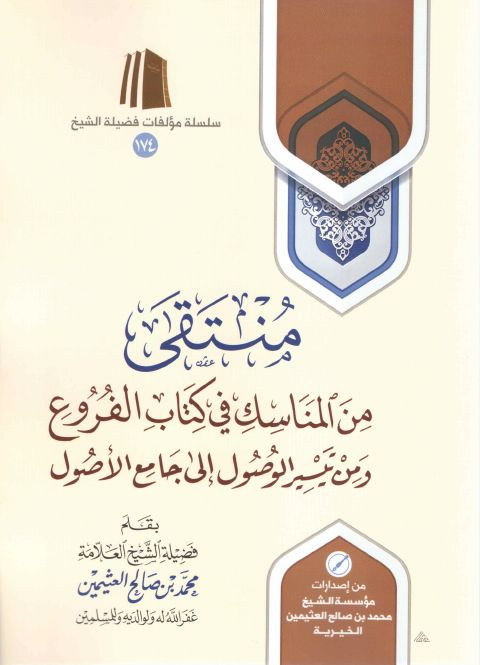

منتقى من المناسك في كتاب الفروع ومن تيسير الوصول إلى جامع الأصول
Authors: محمد بن صالح العثيمين
Publishers: مؤسسة الشيخ محمد بن صالح الخيرية
Download Downloads need an internet connection.
- Published
- 1439هـ 2018م
- Country
- القصيم، السعودية
- Edition
- 2
- Volumes
- 1
- Pages
- 80
- Type
- كتاب
- Category
- الفقه وأصوله
Description
**▫️ العنوان: منتقى من المناسك في كتاب الفروع ومن تيسير الوصول إلى جامع الأصول** ▪️ المؤلف: #محمد_بن_صالح_العثيمين ▫️ الناشر: #مؤسسة_الشيخ_محمد_بن_صالح_الخيرية ▪️ تاريخ النشر: 1439هـ 2018م ▫️ بلد النشر: القصيم، #السعودية ▪️ الطبعة: 2 ▫️ عدد الأجزاء: 1 ▪️ الصفحات: 80 ▫️ نوع الوعاء: #كتاب ▪️ التصنيف الرئيسي: #الفقه_وأصوله ۪